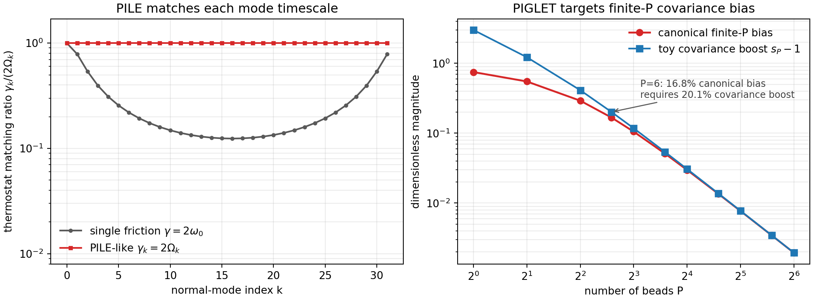

PIMD Series - Part II
NVT Thermostats and GLE
Part I built the ring-polymer Hamiltonian. The next practical question is how to sample it efficiently. This note separates three related ideas: ordinary NVT Langevin sampling, PILE-style normal-mode thermostats, and GLE/PIGLET-style covariance control for reducing the bead count needed for selected quantum observables.
Why NVT is not optional
The ring polymer contains a broad band of internal frequencies,
As \(P\) grows, the highest internal modes become stiff. Microcanonical propagation can conserve the extended Hamiltonian while still sampling slowly or non-ergodically. A thermostat is therefore not just a temperature-control accessory; it is part of the sampling algorithm.
PILE in normal modes
For a harmonic physical potential, each ring-polymer normal mode has an effective frequency
A simple white-noise Langevin thermostat uses one friction for all modes. PILE instead thermostats the normal modes locally, often choosing a friction of order the mode frequency:
The centroid mode is usually handled more gently because it is the physically meaningful low-frequency component; the internal modes are sampling variables and can be thermostatted aggressively.
The useful practical question is not whether PILE changes the target distribution. It does not. The question is whether the same canonical finite-\(P\) distribution is sampled faster. A single friction can be reasonable for one frequency band but mismatched for the rest of the ring-polymer spectrum. A PILE-like choice keeps \(\gamma_k/(2\Omega_k)\) near unity for the internal modes, so each artificial mode is damped on its own natural timescale.
GLE and PIGLET
A generalized Langevin equation introduces auxiliary momenta so that a non-Markovian memory kernel becomes a Markovian system in an enlarged space:
For canonical sampling, the fluctuation-dissipation constraint fixes the noise covariance, commonly written as
The extra freedom in \(\mathbf A_p\) makes the thermostat frequency-selective. PIGLET uses this freedom in the path-integral normal modes: instead of merely accelerating equilibration, it fits colored-noise matrices so that finite-\(P\) bead fluctuations reproduce selected quantum fluctuations much better than canonical finite-\(P\) PIMD. This is useful for equilibrium structural and kinetic-energy observables, but it should not be read as an exact real-time dynamics method.
In the harmonic test below, this idea is reduced to a transparent toy model. For each bead number, the canonical finite-\(P\) value has a known bias. A toy PIGLET-style target applies a bounded configurational covariance boost, up to 25%, to show how covariance control can reduce the bead number needed for one selected observable. Real PIGLET does this with fitted colored-noise matrices rather than a scalar cap, but the benchmark makes the numerical role explicit.
Workflow
- Use the same harmonic oscillator as Part I: \(m=\hbar=1\), \(\beta=2\), \(\omega_0=4\).
- At fixed \(P=32\), start 128 independent normal-mode trajectories from \(Q=0\) with Maxwell momenta.
- Compare a simple single-friction Langevin thermostat, \(\gamma=1\), with a PILE-like thermostat, \(\gamma_k=2\Omega_k\).
- Track the running RMS error of the normalized internal-mode variance \(A=(P-1)^{-1}\sum_{k>0}Q_k^2/\langle Q_k^2\rangle\), whose canonical finite-\(P\) expectation is 1.
- Separately, scan bead number and compare the canonical finite-\(P\) error in \(\langle V\rangle\) with a bounded toy PIGLET-style covariance target.
Result

Interpretation
The figure should be read as two different answers to two different convergence problems. PILE improves convergence in MD sampling time at fixed \(P\); it does not reduce the finite-\(P\) discretization error. PIGLET-style GLEs aim at the other problem: they alter selected equilibrium covariances so that fewer beads are needed for targeted static observables. The price is specificity: a fitted GLE matrix is designed for a target frequency window and target observables, so one should check the observable being reported.
Code used in this note
- pimd_gle_piglet_toy.py runs the fixed-\(P\) sampling benchmark and the toy covariance-shaping bead-convergence benchmark.
- pimd-thermostat-sampling-convergence.csv stores the single-friction and PILE RMS convergence curves used in the left panel.
- pimd-gle-thermostats.csv stores the canonical finite-\(P\) and toy covariance-target error values used in the right panel.
References
- Ceriotti, Bussi, and Parrinello, Phys. Rev. Lett. 102, 020601 (2009).
- Ceriotti, Bussi, and Parrinello, Phys. Rev. Lett. 103, 030603 (2009).
- Ceriotti, Parrinello, Markland, and Manolopoulos, J. Chem. Phys. 133, 124104 (2010).
- Ceriotti and Manolopoulos, Phys. Rev. Lett. 109, 100604 (2012).